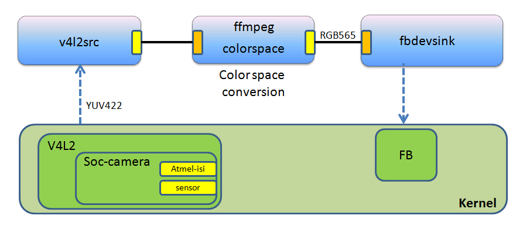

Using ISI (Image Sensor Interface)
Introduction
This page is mainly about how to enable and configure the ISI in AT91SAM SoCs for different image sensors.- The Image Sensor Interface (ISI) connects a CMOS-type image sensor to the processor and provides image capture in various formats from sensor side.
- Use H/VSYNC signal for synchronization or EAV/SAV.
- ISI supported sensor input formats
- YCbCr422, RGB565, RGB888 and grayscale raw data.
- ISI supported output formats
- ISI has two paths (Preview path and Codec path) for the output.
- Preview path will output RGB data with different format.
- Can convert YCbCr or YUV to RGB.
- Support downscale and decimation.
- Max output solution is 640x480.
- Codec path will output YUV data with different orders.
- Can convert RGB to YCrCb.
- Max output solution is 2048x2048.
- Preview path will output RGB data with different format.
- ISI has two paths (Preview path and Codec path) for the output.
Prerequisites
- Linux Kernel v3.6.9
 , Linux Kernel v3.10 , Linux Kernel v3.18 in Linux4sam, all support ISI.
, Linux Kernel v3.10 , Linux Kernel v3.18 in Linux4sam, all support ISI.
- Linux4SAM 6.0 and Linux Kernel v4.14 ISI support is explained in this page.
- Supports ISI of the SAM9G45/9M10, SAM9G25 of SAM9x5 series, SAM9N12 and SAMA5 series.
- SAM9263 ISI is not supported since it use an old ISI IP.
- In SAM9x5 series only SAM9G25 support ISI. And SAM9G25 has no LCD controller.
- In SAMA5D3x-EK boards:
- J11's PIN29 need to be disconnected when insert ISI module board. Since PIN29 is connected to ISI_D11 (pin mux as TWD1).
- TWI0 (i2c0)'s TWD0 & TWCK0 signals are using same pins as ISI_VSYNC & ISI_HSYNC. So need to disable i2c0 when you enable ISI.
- TWI1 (i2c1)'s TWD1 & TWCK1 signals are using same pins as ISI_D11 & ISI_D10. So it cannot support 12bit data input.
- Led d3 should be disable as well as it conflict with camera sensor's reset pin PE24.
- Supported CMOS sensors: OV2640, OV2643, OV5640, OV7740 and OV9740.
- Supports ISI of the SAM9G45/9M10, SAM9G25 of SAM9x5 series, SAM9N12 and SAMA5 series.
Detail description of software
ISI driver in Linux kernel
- ISI driver support the standard v4L2 APIs. And it is in soc-camera framework.
- Current supported sensors: OV2640, OV2643, OV5640, OV7740 and OV9740.
- It's easy to support a sensor if the sensor is
- Using DVP interface connection. Means it uses H/VSYNC signals.
- In soc-camera framework. You can find all soc-camera supported sensors in Kernel menuconfig:
- all the items under the menu:
"Device Drivers -> Multimedia support -> Sensors used on soc_camera driver"
- all the items under the menu:
- In platform camera framework. You can find all camera supported platform sensors in Kernel menuconfig by:
- select the menu:
"Device Drivers -> Multimedia support -> Media Controller API" - select the menu:
"Device Drivers -> Multimedia support -> V4L2 sub-device userspace API" - deselect the menu:
"Device Drivers -> Multimedia support -> Autoselect ancillary drivers (tuners, sensors, i2c, frontends)" - Then all support sensors can be found in the menu:
"Device Drivers -> Multimedia support -> Encoders, decoders, sensors and other helper chips"
- select the menu:
arch/arm/boot/dts/at91sam9x5ek.dtsi to add the new sensor's i2c information and configure the pin mux.
User Applications support ISI
fswebcam
fswebcam is a neat and simple webcam app. It captures images from a V4L1/V4L2 compatible device or file, averages them to reduce noise and draws a caption using the GD Graphics Library which also handles compressing the image to PNG or JPEG. The resulting image is saved to a file or sent to stdio where it can be piped to something like ncftpput or scp.
- Add fswebcam in Buildroot
- Select
"Package Selection for the target -> Graphic libraries and applications -> fswebcam".
- Select
- Use fswebcam to capture a image.
#!/bin/sh VIDEO_DEV=/dev/video0 SKIP_FRAMES=20 # test preview channel fswebcam -S ${SKIP_FRAMES} -d ${VIDEO_DEV} -p RGB565 -r 640x480 rgb565.jpg fswebcam -S ${SKIP_FRAMES} -d ${VIDEO_DEV} -p RGB565 -r 320x240 rgb565_defactor.jpg # test codec channel fswebcam -S ${SKIP_FRAMES} -d ${VIDEO_DEV} -p YUYV -r 640x480 yuyv.jpg fswebcam -S ${SKIP_FRAMES} -d ${VIDEO_DEV} -p YUYV -r 800x600 yuyv_800x600.jpg fswebcam -S ${SKIP_FRAMES} -d ${VIDEO_DEV} -p UYVY -r 640x480 uyvy.jpg fswebcam -S ${SKIP_FRAMES} -d ${VIDEO_DEV} -p UYVY -r 800x600 uyvy_800x600.jpg # test codec channel, without any processing, GREY, or Bayer RGB. fswebcam -S ${SKIP_FRAMES} -d ${VIDEO_DEV} -p BAYER -r 640x480 bayer_bggr8.jpg fswebcam -S ${SKIP_FRAMES} -d ${VIDEO_DEV} -p SGRBG8 -r 640x480 bayer_grbg8.jpg-
-S: frames that need to skip. -
-d /dev/video0: specify the ISI as the input source. -
-p: pixel format, can be RGB565, YUYV, UYVY, BAYER, SGRBGB8 and etc. -
-r: resolution.
-
FFmpeg
FFmpeg is a complete, cross-platform solution to record, convert and stream audio and video. It supports video4linux2 in Linux.
- Add FFmpeg in Buildroot (It's already included in the Linux4SAM buildroot demo).
- Select
"Package Selection for the target -> Audio and video applications -> ffmpeg".
- Select
- Use FFmpeg to capture a mpeg4 video clip.
ffmpeg -r 25 -s vga -t 20 -pix_fmt yuyv422 -f video4linux2 -i /dev/video0 video.avi
-
-r: frame rate -
-s: resolution, it can beqcif, cif, qvga, vga, svga, xga, uxga. -
-t: time duration in second. -
-pix_fmt: pixel format, only support yuyv422. -
-f video4linux2: specify the format. Useffmpeg -formatswill show all supported formats. -
-i /dev/video0: specify the ISI as the input source. Run following command to check the source name:# cat /sys/class/video4linux/video0/name isi-camera -
video.avi: output video file name
-
vcodec specified, it use mpeg4 as default.
ffmpeg -pix_fmts can show all the supported pixel formats.
- Use FFmpeg application to capture images.
ffmpeg -f video4linux2 -r 1 -s vga -t 4 -i /dev/video0 -pix_fmt yuyv422 -f image2 -vcodec png image%d.png
-
-r: frame rate -
-s: resolution, it can beqcif, cif, qvga, vga, svga, xga, uxga. -
-t: time duration in second. -
-i /dev/video0: specify the ISI as the input source. Run following command to check the source name:# cat /sys/class/video4linux/video0/name isi-camera -
-pix_fmt: pixel format, only support yuyv422. -
-f image2: image2 sequence format. Useffmpeg -formatswill show all supported formats. -
-vcodec png: specify output format is png. Useffmpeg -codecswill show all supported codec. -
image%d.png: output file name is image1.png, image2.png and etc.
-
GStreamer
GStreamer is a library for constructing graphs of media-handling components. The applications it supports range from simple Ogg/Vorbis playback, audio/video streaming to complex audio (mixing) and video (non-linear editing) processing.
GStreamer has been ported to a wide range of operating systems, processors and compilers.
- Add GStreamer in Buildroot (It's already included in the Linux4SAM Buildroot demo).
- Select
"Package Selection for the target -> Audio and video applications -> gstreamer"and the plugins that you needed.
- Select
- Use GStreamer to preview on LCD.
# gstreamer 0.10 gst-launch v4l2src device="/dev/video1" ! video/x-raw-yuv,width=640,height=480 ! ffmpegcolorspace ! fbdevsink # gstreamer 1.0 gst-launch-1.0 v4l2src device="/dev/video1" ! video/x-raw,width=640,height=480 ! videoconvert ! fbdevsink
-
v4l2src: a plugin to support v4l2 device as a source-
device="/dev/video1": specify the ISI as the v4l2 input device.- You can check the device name by run command:
cat /sys/class/video4linux/video1/name
- You can check the device name by run command:
-
video/x-raw-yuv,width=640,height=480: For gstreamer 0.10, specify the v4l2 output video format and size. -
video/x-raw,width=640,height=480: For gstreamer 1.0, specify the v4l2 output video format and size.
-
-
ffmpegcolorspaceorvideoconvert: a plugin to convert from one color space to another -
fbdevsink: a plugin to render to framebuffer device
-
gst-inspect will show all installed plugins.
gst-inspect [plugin name] will show all supported parameters for this plugins.
- 
ZXing barcode reader
ZXing is an open-source, multi-format 1D/2D barcode image processing library implemented in Java, with ports to other languages. The project also includes a barcode reader example.- Add the ZXing barcode reader application in Buildroot.
- Add ZXing libary in Buildroot (The Linux4SAM buildroot demo already include it).
- Select
"Package Selection for the target -> Libraries -> Graphics -> zxing".
- Select
- Apply attached patch on top of the buildroot-2012.11.1-at91.
- This patch will change the zxing project's Makefile to generate not only zxing library but also the barcode reader example.
- Run command
make zxingto generate the barcode application:zxing_barcode.-
zxing_barcodeis located onoutpout/target/use/bin/.
-
- Add ZXing libary in Buildroot (The Linux4SAM buildroot demo already include it).
- Read barcode from the image by using ZXing barcode reader.
- Get an picture which include a barcode.
- Please refer to FFmpeg section for the image capture.
- Run following command to reader the barcode.
zxing_barcode *.jpg
- Get an picture which include a barcode.
FAQ
Q: How to enable ISI support in SAMA5D3x-EK board?
- Find the dts file according to your board type in:
arch/arm/boot/dts/sama5d3xek.dts- x is the number of your board type.
- Uncomment the line to enable isi and sensors.
#include "sama5d3xmb_isi_sensors.dtsi"
- Disable led d3 and i2c0.
i2c0: i2c@f0014000 { status = "disabled"; }; ... ... leds { d3 { label = "d3"; gpios = <&pioE 24 GPIO_ACTIVE_HIGH>; status = "disabled"; }; }; - Run following command to re-compile the dts to dtb file in the top of kernel source directory.
make dtbs # before doing this make sure your config is based on sama5_defconfig
- Load your kernel with above correct dtb file, which will enable ISI and disable the audio.
Q: How to check the ISI is probed in my board?
- Check the boot message whether there is an information about sensor probe.
soc-camera-pdrv soc-camera-pdrv.0: Probing soc-camera-pdrv.0 ov2640 0-0030: ov2640 Product ID 26:42 Manufacturer ID 7f:a2 i2c i2c-0: OV2640 Probed soc-camera-pdrv soc-camera-pdrv.1: Probing soc-camera-pdrv.1 ov5642 0-003c: reg_read: i2c read error, reg: 300a ov5642: probe of 0-003c failed with error -121In above example, the message shows an OV2640 sensor is probed. But fail to probe of OV5642 as we only support one camera module slot in the board. - Print all the v4L2 device in system to check ISI device is existed?
# ls /sys/class/video4linux/video* /sys/class/video4linux/video0: debug dev index name power subsystem uevent /sys/class/video4linux/video1: debug device name subsystem dev index power uevent # cat /sys/class/video4linux/video0/name # cat /sys/class/video4linux/video1/name isi-cameraIn above example, we can find thevideo1is theisi-cameradevice.
Q: If the ISI cannot be probed in my board, what should I do?
- Check the kernel boot message to see if there is any error message about ISI and sensor
- Following the below check list to troubleshoot above errors.
- Check the kernel config file:
- Is the ISI driver and the sensor driver enabled?
- Check your board's device tree file(
.dts, .dtsi):- Is the ISI device node is enabled?
- Is the ISI pins are configured correctly?
- Check
arch/arm/mach-at91/board-dt.cfile or.dts, .dtsi(in linux-3.18 and later) files:- Is the sensor's i2c info correct?
- Is the sensor's power/reset pin correct?
- Is the PCK correct?
- Check the kernel config file:
Reference
| WebFaqBaseForm | |
|---|---|
| Boards | Sama5d4Xplained, Sama5d4ek, Sama5d3Xplained, Sama5d3xek |
| Components | Kernel, linux-3.18-at91, linux-4.1-at91, linux-4.4-at91, linux-4.9-at91 |
| Summary | How to use the Image Sensor Interface |


| I | Attachment | Action | Size | Date | Who | Comment |
|---|---|---|---|---|---|---|
| |
common-camera-sensors_3.18.png | manage | 169.3 K | 2015-05-19 - 05:08 | UnknownUser | |
| |
soc-camera-sensors_3.18.png | manage | 103.1 K | 2015-05-19 - 05:09 | UnknownUser | |
| |
to-select-common-camera-sensors_3.18.png | manage | 133.4 K | 2015-05-19 - 05:09 | UnknownUser |
r17 - 16 Nov 2018 - 15:28:19 - EugenHristev

{kind=link}
{kind=link}
{kind=link}
{kind=link}
{kind=link}
{kind=link}
Copyright © by the contributing authors. All material on this collaboration platform is the property of the contributing authors.
Linux® is the registered trademark of Linus Torvalds in the U.S. and other countries.
Microchip® and others, are registered trademarks or trademarks of Microchip Technology Inc. and its subsidiaries. 
Arm® and others are registered trademarks or trademarks of Arm Limited (or its affiliates). Other terms and product names may be trademarks of others.
Ideas, requests, contributions ? Connect to LinksToCommunities page.